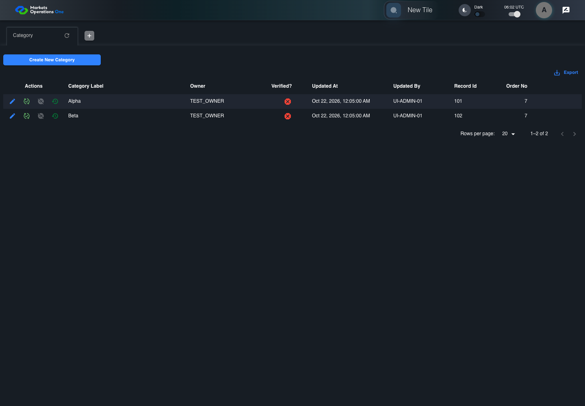
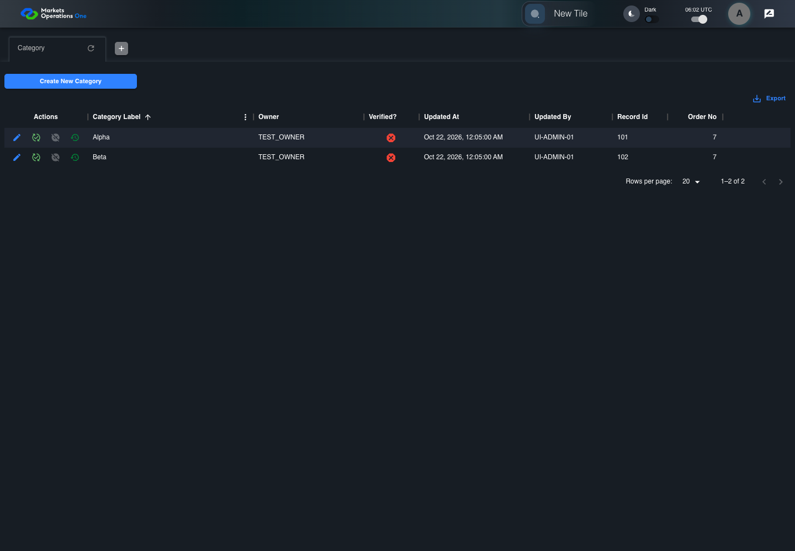

UX-065 administration boundary with step screenshots
PASS · application/run-050/ux-065-administration-boundary-with-step-screenshots-442b59626a94-attempt-1 · ACTUAL_APPLICATION_LOCAL_SERVICES
Actual React administration screens. Controlled browser credentials, role, records, and BFF responses. Save probes persist the received UI payload without replacing it with expected values. Declared clock emulation controls field timers. Proposed accessibility and source-risk expectations remain separate from business approval.
2026-10-22T06:02:30.325Z to 2026-10-22T06:02:33.791Z
Assertions and result · Artifact manifest · Exact run inputs and source hashes
Result SHA-256:65a228be40f16614a19a9ce18225d1ec09a7ec07bd3e289e9bb3780ebf1d62aeScreenshot capture: CAPTURED. Named frames: 4.
Step screenshot evidence: COMPLETE. 3/3 canonical steps have execution screenshots.
Canonical step timeline
Given ADMIN-A has only C1 record101 label "Alpha" and C2 record102 label "Beta"
Execution: PASSED.
1. step-01 Visible state after step 1: Given ADMIN-A has only C1 record101 label "Alpha" and C2 record102 label "Beta"
2026-10-22T06:02:32.600Z · 1440×1000
Step: /Users/lushevol/code/github/ratan-release-impact/workbench/tasks/ui-test-coverage-20261022/test-cases.md:14403
SHA-256:5e2509baf9c306308f4594a2ee77c5846ab1bbfe7d18d77efd51d11191af89c8When ADMIN-A selects ascending sort for the column labelled "Category Label" in the Category grid on the administration page
Execution: PASSED.
2. step-02 Visible state after step 2: When ADMIN-A selects ascending sort for the column labelled "Category Label" in the Category grid on the administration page
2026-10-22T06:02:32.809Z · 1440×1000
Step: /Users/lushevol/code/github/ratan-release-impact/workbench/tasks/ui-test-coverage-20261022/test-cases.md:14404
SHA-256:6522599e6f1024708cb0d515f0b23dc6c2ab9b70a03d0c3349a1314bfaefdfd7Then The ordered Category grid label values equal ["Alpha", "Beta"]
Execution: PASSED.![step-03: Visible state after step 3: Then The ordered Category grid label values equal ["Alpha", "Beta"]](../../application/run-050/cases/ux-065-administration-boundary-with-step-screenshots-442b59626a94-attempt-1/003-step-03.png)
3. step-03 Visible state after step 3: Then The ordered Category grid label values equal ["Alpha", "Beta"]
2026-10-22T06:02:32.896Z · 1440×1000
Step: /Users/lushevol/code/github/ratan-release-impact/workbench/tasks/ui-test-coverage-20261022/test-cases.md:14405
SHA-256:6522599e6f1024708cb0d515f0b23dc6c2ab9b70a03d0c3349a1314bfaefdfd7
Additional named frames

The final visible state after the named test assertions.
2026-10-22T06:02:33.039Z · 1440×1000Step: Test source: /Users/lushevol/code/github/ratan-release-impact/workbench/e2e/audit-specs/admin-ux.spec.ts:12
SHA-256:
6522599e6f1024708cb0d515f0b23dc6c2ab9b70a03d0c3349a1314bfaefdfd7Screenshots establish visible state only. Assertions and traces support functional claims.